reviewUpset() visualizes how the values of a multi-value
column co-occur across studies. Each study contributes
the set of distinct values it reports in that column. Every
observed combination of values becomes a bar whose height counts how
many studies share that exact set, and a dot matrix beneath the bars
marks which values make up each combination. This generalizes the
pairwise reviewOverlap()
to three or more co-occurring values. This article walks through
every argument of
reviewUpset(data, col, sep = "\r\n", study_id = StudyID, base_size = 12,
na.rm = TRUE, na_label = "Not reported", n_intersections = 15,
sort_by = c("freq", "degree"), fill = "#7BB0D1")reviewUpset() requires the ggupset
package.
Default
Pass the data frame and a multi-value column. Outcome
records the outcomes each study measured, newline-separated. The tallest
bars are the most common outcome combinations; the dots beneath show
which outcomes each combination contains.
reviewUpset(studies, Outcome)
reviewUpset() shows the two panels that answer “which
combinations occur, and how often”: the intersection-size bars and the
combination matrix. The optional per-value set-size sidebar
from some UpSet implementations is intentionally omitted so the result
stays a single, theme_litreview-styled ggplot you can
extend with +. For the individual value totals, use reviewBar() on the same column.
col: the multi-value column to analyze
Any column whose cells may hold several values works. Here we look at how interventions co-occur:
reviewUpset(studies, Intervention)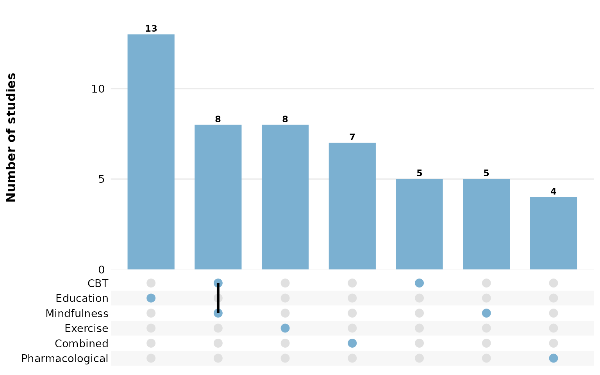
Age groups:
reviewUpset(studies, AgeGroup)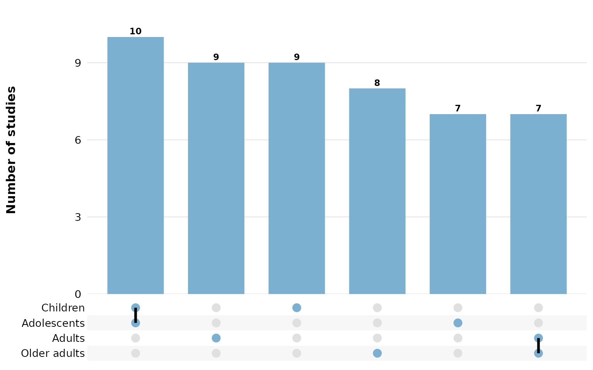
Countries — many studies span several, so their combinations are rich:
reviewUpset(studies, Country)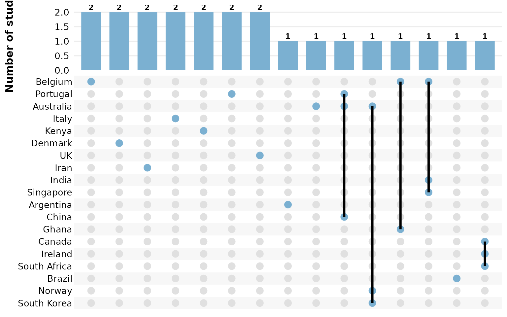
sep: multi-value separator
Cells holding several values are split on sep before the
sets are built. In studies, the multi-value columns use
newline separators ("\r\n", the default), so each value is
treated independently. If your data uses a different delimiter, set
sep. Here we rebuild a semicolon-separated column to
demonstrate:
studies_semi <- studies
studies_semi$Outcome <- gsub("\r\n|\n", "; ", studies_semi$Outcome)
reviewUpset(studies_semi, Outcome, sep = "; ")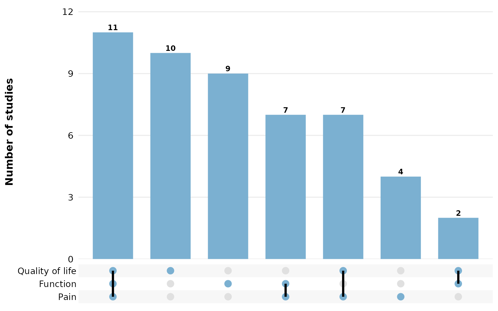
study_id: how studies are grouped into sets
One set is formed per study, and study_id names the
column that identifies studies (default StudyID). All rows
sharing an identifier are pooled into a single combination. Point it at
a different identifier column to regroup — here we group by
Author instead:
reviewUpset(studies, Outcome, study_id = Author)
base_size: overall text and element scaling
A single knob scales all text, bars, and matrix dots proportionally. Smaller, for multi-panel figures:
reviewUpset(studies, Outcome, base_size = 9)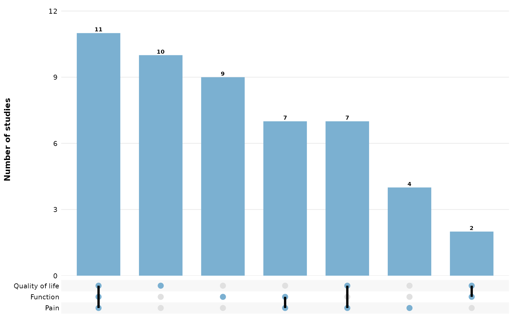
Larger, for slides or posters:
reviewUpset(studies, Outcome, base_size = 16)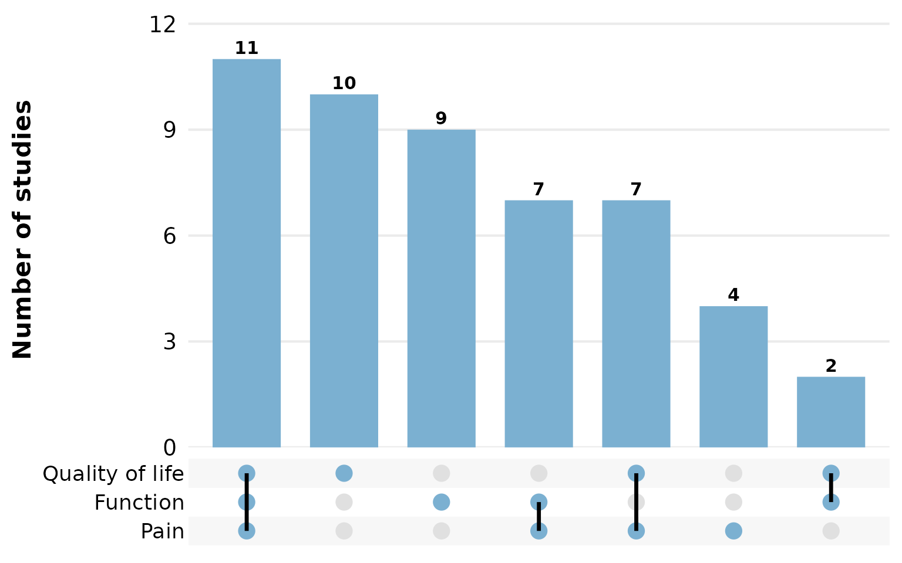
Missing data: na.rm and na_label
These two arguments control how NA (and empty) cells are
treated. By default na.rm = TRUE drops missing values, so
studies that report nothing for the column contribute no set and vanish
from the plot.
Set na.rm = FALSE to keep missing values as a distinct
set member, and na_label names it. A study reporting only a
missing value then forms its own single-element combination:
reviewUpset(studies, FundingSource, na.rm = FALSE, na_label = "Not reported")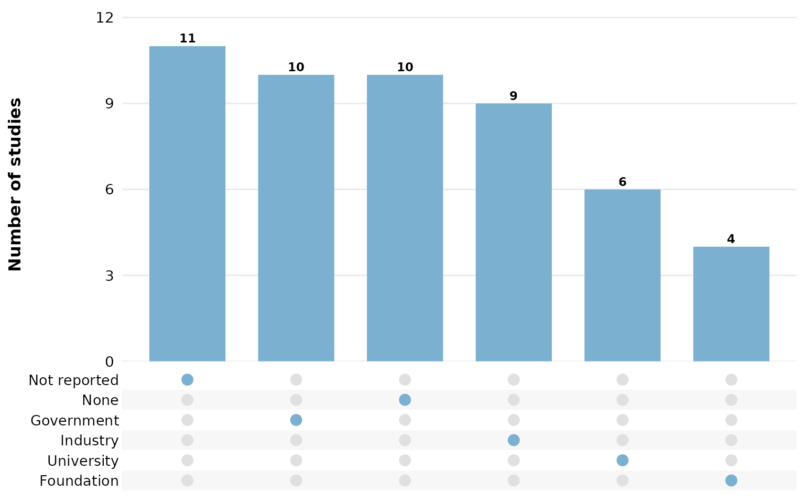
n_intersections: cap on the number of combinations
shown
Only the largest n_intersections combinations are drawn
(default 15), keeping the plot readable when many distinct
sets exist. Lower it to focus on the few most common combinations:
reviewUpset(studies, Country, n_intersections = 6)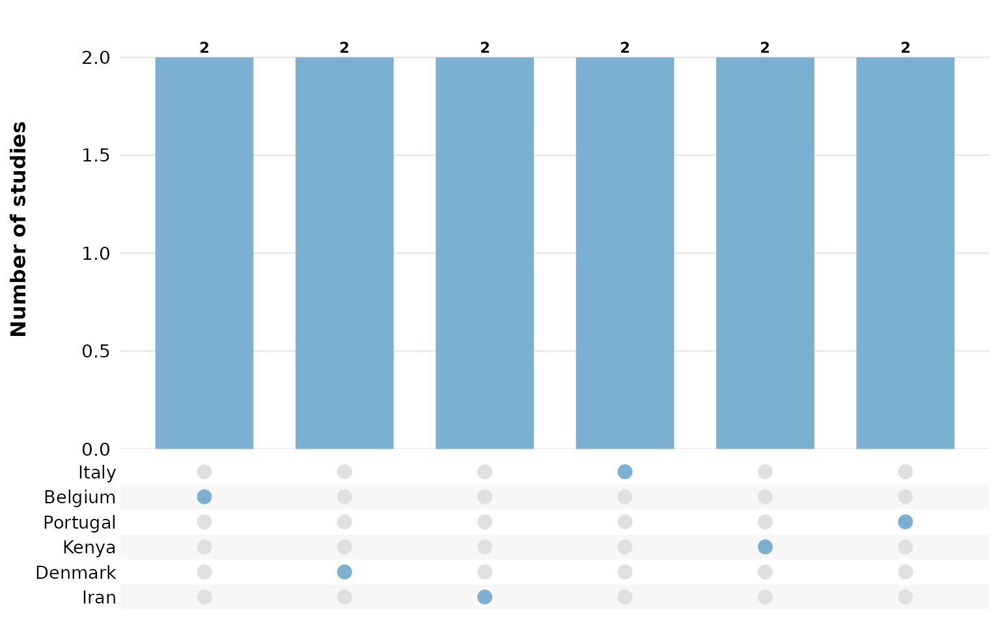
sort_by: ordering the combinations
sort_by = "freq" (the default) orders bars by
intersection size, so the most common combinations sit on the left:
reviewUpset(studies, Outcome, sort_by = "freq")
sort_by = "degree" instead orders by the number of
values in each combination, grouping single-value sets, then pairs, then
triples, and so on:
reviewUpset(studies, Outcome, sort_by = "degree")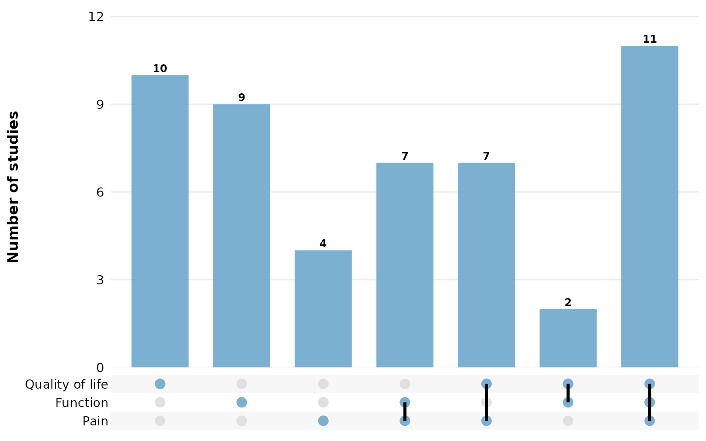
fill: bar and matrix-dot color
A single hex color paints every bar and every filled matrix dot:
reviewUpset(studies, Outcome, fill = "#59a14f")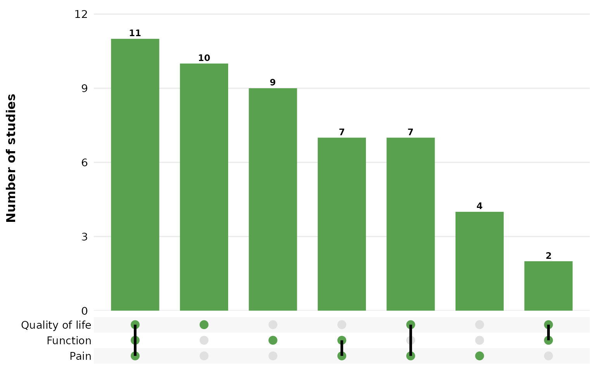
Use one of the package PALETTE colors:
reviewUpset(studies, Outcome, fill = PALETTE[4])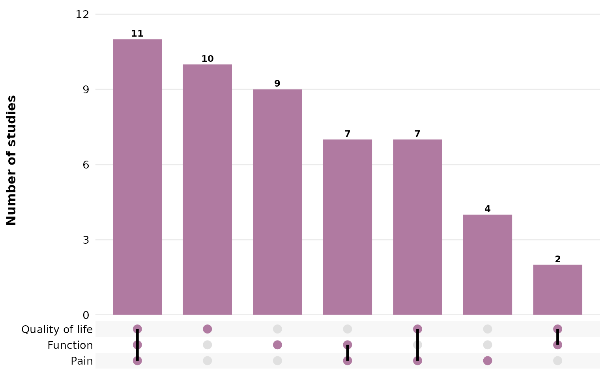
Composing with ggplot2
Every review*() function returns a plain ggplot, so you
can keep adding layers, scales, and labels with +:
reviewUpset(studies, Outcome, fill = "#59a14f") +
labs(title = "Outcome combinations",
subtitle = "n = 50 studies",
caption = "Source: example dataset") +
theme(plot.title.position = "plot")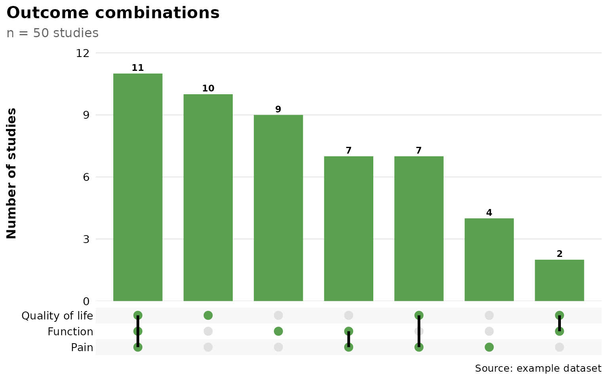